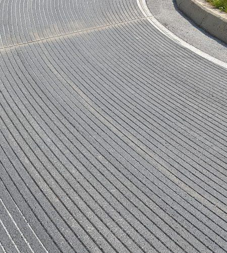
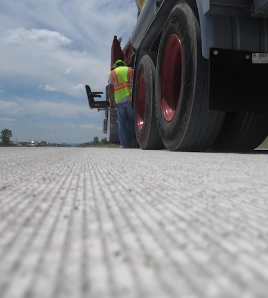
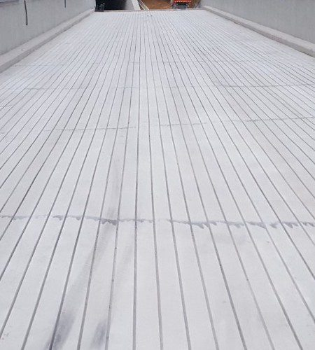
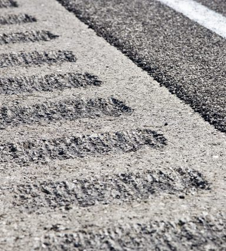
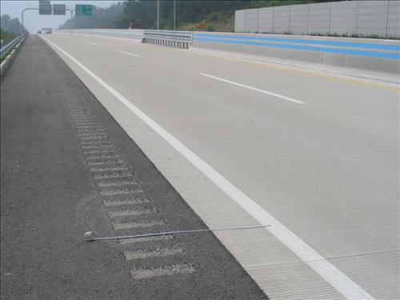

그루빙의 정의와 원리
그루빙(Grooving)은 1960년대 미국 항공우주국(NASA)이 항공기 안전을 위해 처음 개발한 포장 표면처리 공법으로, 공항과 도로의 포장면에 입체적인 홈을 형성해 타이어 패턴과 같은 효과를 내는 미끄럼 방지 도로 안전 기술입니다.
수막현상 방지와 배수성 향상에 따른 미끄럼 방지, 결빙 억제, 주행 안정성 향상, 소음 감소, 운전자 경고음 발생 등의 효과가 있어 교통사고 발생 가능성을 줄여 줍니다. 홈의 방향에 따라 종방향 그루빙, 횡방향 그루빙, 감속·경고음 요철 공법으로 나눕니다.
그루빙의 효과
- 수막현상 방지: 젖은 노면의 미끄럼 사고 감소
- 곡선 구간 조향성 향상: 곡선 구간의 차량 이탈 사고 예방
- 소음 감소: 콘크리트 포장의 횡방향 타이닝 대신 종방향으로 시공해 주행 소음 감소
- 한랭 지역의 노면 동결 억제와 미끄럼 방지
- 주행 안정성: 해안도로, 산간도로, 장대교량 주행 시 접지력 향상
- 미끄럼 저항성 향상
- 기타: 위험 구간 진입 경고, 졸음 예방, 우천 시 야간 난반사 억제 등


종방향(세로형) 그루빙
주행 방향으로 낸 세로형 홈은 커브, 경사면, 옆바람을 받기 쉬운 직선도로, 육교 등에 적합합니다. 커브에서는 타이어의 그립력을 높여 코너링 시 조종을 안정시키고, 직선 도로에서는 옆바람에 대한 저항력을 높여 미끄럼 사고를 막습니다.
- 타이어가 홈에 물리는 기계적 작용으로 커브 등에서 코너링 시 조종 안정성을 높입니다.
- 고속도로 등에서 비가 올 때 타이어와 노면 사이의 수막을 제거해 미끄럼 사고를 줄입니다.
- 다리 위처럼 옆바람을 맞기 쉬운 노면에서 조종을 안정시킵니다.
- 급브레이크를 밟을 때 접지력을 높이고 직진 안정성을 향상시킵니다.
- 동결 노면의 얼음막을 분단시키고 노면 위의 빙설을 배제합니다.
- 비가 올 때 노면 배수를 촉진하고 노면을 빠르게 건조시킵니다.
적용 사례: 급커브·산악도로 어린이 보호구역 골프장 카트길 종방향 그루빙 시공 상담
횡방향(가로형) 그루빙
도로 폭 방향으로 낸 가로형 홈은 주행할 때 타이어에서 전달되는 소리와 진동으로 졸음운전 방지, 감속 경고 등에 쓰입니다. 교차로, 횡단보도, 요금소 등의 앞에 시공하면 비 오는 날 젖은 노면에서 제동거리를 줄일 수 있습니다.
- 젖은 노면을 시속 50km로 주행할 때 제동거리를 30~40% 줄여 높은 미끄럼 저항성을 확보할 수 있습니다.
- 비가 올 때 배수를 촉진해 노면을 빠르게 건조시킵니다.
- 노면 위의 기름막이나 녹은 고무 등을 배제해 급브레이크를 밟을 때 타이어의 접지력을 높입니다.
- 동결한 노면의 얼음막을 홈으로 분단시켜 빙설을 배제합니다.
- 배수가 취약한 구간이나 겨울철 결빙 사고가 잦은 음지의 평탄한 구간(종단경사 2% 미만)에 주로 적용합니다.
- 용도에 따라 가로형과 세로형을 조합한 안전홈을 시공할 수 있습니다.
적용 사례: 주차장 램프 급경사 이면도로 버스 정류장·교차로 횡방향 그루빙 시공 상담


감속·경고음 요철 공법
가로형 홈의 간격을 달리해 배치하면 차량이 지나갈 때 타이어에서 나는 소리와 진동을 경고음이나 안내음으로 쓸 수 있습니다.
- 졸음운전 방지: 차로 가장자리에 시공해 차로를 벗어나면 소리와 진동으로 알립니다.
- 감속 경고: 요금소, 교차로, 급커브 진입부 앞에서 운전자가 속도를 줄이도록 유도합니다.
- 위험 구간 진입 안내: 공사 구간, 어린이 보호구역 진입부 등에 적용합니다.
- 횡방향 그루빙과 조합해 시공합니다.
적용 사례: 어린이 보호구역 급커브 진입부 경고음 요철 시공 상담
규격과 방향 선택
그루빙은 현장의 문제(미끄럼, 결빙, 과속, 졸음운전)에 따라 홈의 방향을 먼저 정하고, 포장 상태와 교통 조건에 맞춰 폭·깊이·간격을 설계합니다.
| 현장의 문제 | 권장 방향 | 대표 현장 |
|---|---|---|
| 곡선부 차로 이탈, 옆바람, 빗길 수막 | 종방향 그루빙 | 급커브·산악도로, 교량, 골프장 카트길 |
| 제동거리 부족, 내리막 미끄럼 | 횡방향 그루빙 | 지하주차장 램프, 급경사 골목, 교차로·횡단보도 앞 |
| 과속, 졸음운전, 위험 구간 진입 | 감속·경고음 요철 | 요금소·교차로 전방, 어린이 보호구역 진입부 |
| 결빙·배수 취약 | 현장 조건에 따라 종방향 또는 조합 | 음지 구간, 선착장·항만 대면적 |
홈의 폭·깊이·간격은 포장 종류와 두께, 교통량, 발주처 시방서에 맞춰 정합니다. 발주처 시방이나 관련 지침에 정해진 기준이 있으면 그 기준을 따르며, 현장 확인 후 제안서와 견적서에 적용 규격을 명시합니다.
아스팔트·콘크리트별 적용
- 아스팔트 포장: 신설·기존 도로 대부분이 해당합니다. 여름철 고온이나 중차량 통행이 많은 구간은 홈이 눌려 얕아질 수 있어 현장 여건에 맞춰 홈의 깊이와 간격을 정합니다.
- 콘크리트 포장: 교량, 주차장 램프, 골프장 카트길, 선착장처럼 콘크리트로 포장된 곳에 적용하며 홈의 형태가 오래 유지됩니다. 열선이 매설된 구간은 열선 깊이를 먼저 확인해 절삭 깊이를 조정합니다.
- 미끄럼 방지 포장(컬러 포장) 위: 어린이 보호구역 등의 적색 포장 위에도 시공합니다. 포장면이 마모되면 미끄럼 저항이 떨어지는 문제를 홈으로 보완합니다. (어린이 보호구역 시공 사례)
시공 절차와 소요 시간
- 문의현장 위치, 사진, 사고 유형(미끄럼·결빙·과속 등), 대략의 규모를 알려주세요.
- 현장 확인·견적기술진이 현장을 확인하고 공법(방향·간격·깊이)을 제안한 뒤 견적을 드립니다.
- 시공교통량이 많은 도로는 야간에, 골프장은 휴장일에 맞추는 등 통제 시간을 협의해 시공합니다. 안개형 분무 집진으로 분진과 소음을 줄입니다.
- 완료 보고시공 사진과 내역을 제출하고 세금계산서를 발행합니다.
작업 시간은 시공 면적·길이, 투입 장비 대수, 교통 통제 조건에 따라 달라지므로 현장 확인 후 견적서에 함께 안내합니다. 대면적 현장은 장비 두 대를 동시에 투입해 공기를 줄이고, 야간 시공 구간은 다음 날 아침부터 정상 통행할 수 있도록 작업합니다.
비용·견적 기준
그루빙 비용은 아래 조건을 함께 보고 산정합니다.
- 시공 면적(㎡) 또는 길이(m)
- 공법: 홈의 방향과 간격, 두 방향 조합 여부
- 포장 종류(아스팔트·콘크리트·컬러 포장)와 노면 상태
- 교통 통제 필요 여부와 시공 시간대(주간·야간·휴장일)
- 현장 위치와 장비 이동 거리
- 소형 장비가 필요한 좁은 구간(골목, 카트길, 지하주차장) 여부
현장 사진과 위치, 대략의 면적을 문의 폼이나 전화(010-5152-2253)로 보내주시면 검토 후 연락드리고, 현장 확인 후 견적을 드립니다. 상담과 견적은 무료입니다.